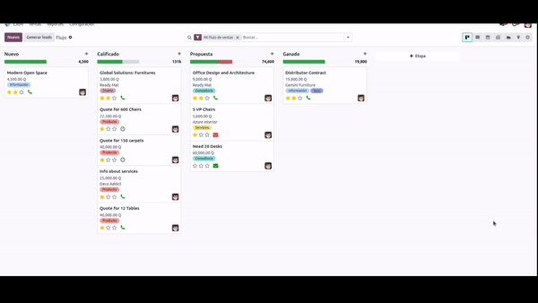

<section class="oe_container oe_dark">
    <div class="oe_row oe_spaced">
        <h2 class="oe_slogan">Translated languages</h2>
        <div class="oe_span1 text-center">
            
            
            
            
            
            
            
            
            
            
            
            
            
            
            
        </div>
    </div>
</section>

<section class="oe_container oe_separator">
</section>

<section class="oe_container">
    <div class="oe_row oe_spaced">
        <div class="oe_span12">
            <h1 class="oe_mt32 oe_mb8 text-center">
                <b>View the history of the stages in CRM</b>
            </h1>
            <h2 class="oe_mt32 text-center">
                You don't need any steps, just change stages and it will save the history of the change.
            </h2>
            <h3 class="oe_mt32 text-center">
                A single clarification, in the same day you will not place the change of the same stage twice
            </h3>
            
        </div>
    </div>
</section>

<section class="oe_container oe_separator">
</section>
